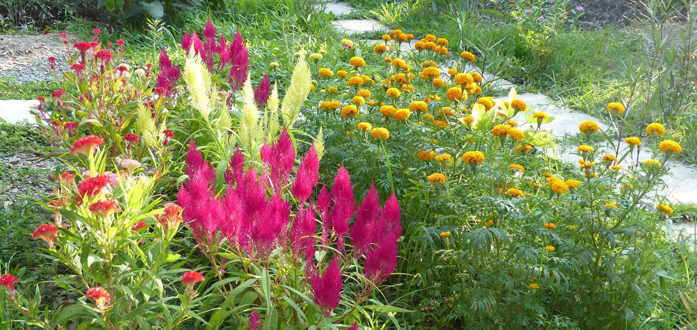
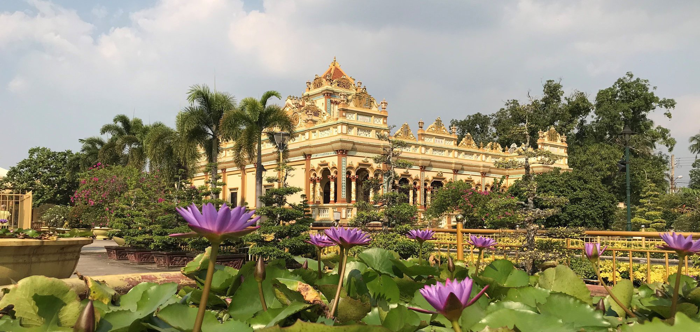

Entrées végétariennes
Fraîcheur printanière : rouleaux de printemps aux crevettes et aux différentes herbes
Omelette aux champignons pleurotte et tomates
Soupe de courgettes au bouillon de poulet saveur gingembre
La Triade : Nems, Gyoza, Samoussa
Edamame
Mini poke-bowls en trilogie
Découverte : Pickles de renkon
Découverte : Soupe de luffa
Entrée signature
Bánh Xèo accompagné de sa salade birmane
Viandes
Bœuf bourguignon revisité à la vietnamienne : pomme de terres et carottes
Bœuf sauté accompagné de sa poêlée de légumes : chou fleur, carottes, pack choi, courgettes, poireaux, haricots verts
Cháo Vit : Soupe de riz au canard
Bo Loc Lac avec son riz et ses légumes
Poissons
Mì xào : nouilles sautées aux légumes et aux crevettes
Soupe aigre douce de poisson dans son lit de tomates, soja, gombo et ananas
Plat signature
Tagliatelles de légumes aux langoustines, émulsion à la clémentine

Gâteaux
Moon cake et sa prophétie
Riz gluant à la mangue et au lait de coco accompagné de ses boules coco
Fruits
Fruits de saison
Découverte de nouvelles saveurs : mangoustans, fruits du dragon, longanes et ramboutans
Dessert signature
Quatre-coeurs au thé matcha, coeur fondant coulis de fraises

Vins
Vin blanc d'Alsace
Vin rouge Saint-Émilion Grand Cru Classé, château Chatelet années 2013, 2015 et 2016
Vin rosé, château Vignelaure 2017
Champagne Laurent-Perrier
Divers
Saké japonais
Dégustations d'alcool de riz et de serpent
Découverte : Café au brocoli